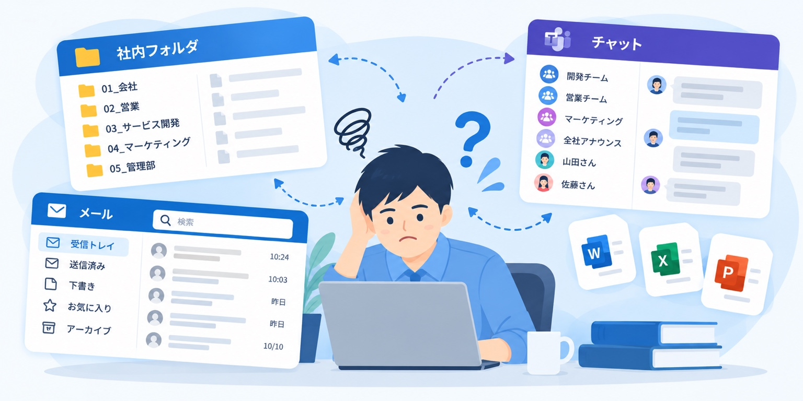

OUR PURPOSE
担当者が変わっても、
必要な情報にたどり着ける組織へ。
S.sentiaは、Microsoft 365の活用、企業内検索の構築、生成AIの業務定着を支援します。
今あるツールと社内に蓄積した知識を、日々の仕事に活かせるよう整えます。
CHALLENGES
「あの資料、どこにあったっけ？」が、ストレスになっていませんか？
情報がどんどん増える現代において、情報を探すことに、我々は労働時間の約20%を費やしています。
情報が散在し、欲しい情報がどこにあるかわからない
情報がファイルサーバー・メール・チャット・議事録・社内システム・アプリに分散して、探すだけで時間がかかる
キーワードで検索しても、欲しい情報がヒットしない
そのため、フォルダ階層を辿って情報を探し、結局時間がかかる
複数の情報源・ツールを行き来しないと仕事が進まない
使用する社内システムやアプリが増えると、照合の手間が増え、判断ミスや手戻りの原因にもなる
資料の場所を、特定の社員に聞かないとわからない
担当者が変わると品質やスピードが落ちる（属人化）

SERVICES
S.sentiaのサービスの3つの柱
S.sentiaでは、そうした情報の分散・検索・スピードといった課題を解決するサービスを提供しています。
企業内検索の構築支援
生成AIの業務導入・定着支援
SAMPLE
複数のファイル・ツールを一つの画面から。
例として、新サービスの資料、Teamsのやり取り、Notionの議事録をCopilotチャットで横断確認し、参照した情報からサービス紹介スライドの案を作るといったことが可能です。
SERVICE GUIDE
企業内検索を検討中の方へ
Microsoft 365を活用した企業内検索の仕組みと導入の流れを資料にまとめています。
企業内検索のサービス資料を請求する
フォームで「資料請求」を選択してください。
ご希望のない営業電話はいたしません。